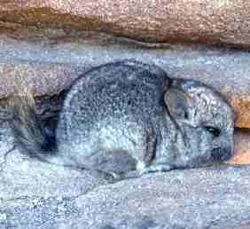

Chinchilla Chinchilla

The Chinchilla Chinchilla, or more informally known as the "Short tailed chinchilla" due to their short tails, are the
far less common species of Chinchilla and was once even considered to be extinct!
Once commonly found in Chile, Argentina, Peru, and Bolivia. The chinchilla chinchillas are now mainly held in captivity, despite
being known as the "wild" genus of chinchilla.
The fur of the chinchilla chinchilla is considered to be more "high-quality" than that
of the Chinchilla Lanigera, which is the main reason there is so few of them, since the European
hunters went for them first.
This file is licensed under the Creative Commons
Attribution license and
was originally
taken by Jaime E. Jimenez, Laboratory of Ecology, University of Los Lagos, Chile
Characteristics/Unique features

There aren't much distinct physical features that serperate the two genuses of chinchilla. However, the main and most blatant
difference is the tail length. Hence, the chinchilla chinchilla ending up with the nickname "Short tailed chinchilla" and
the Chinchilla Lanigera ending up with the nickname "Long tailed chinchilla".
another minor instance would be the body shape and size. While minimal, you can see in the diagram that there is a small
difference in body shape, and that the chinchilla chinchilla is a bit bigger than the chinchilla lanigera.
{kind=link}